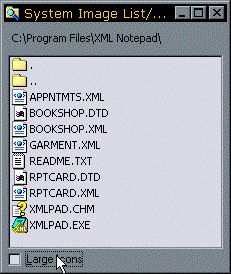

Owner Draw Combo List with System Image List Sample (37K)
Owner Draw Combo List with System Image List Sample (37K)
 vbAccelerator System Image List Class (30K)
vbAccelerator System Image List Class (30K)
 29 May 1999
29 May 1999
First Posted
 Owner Draw Combo and List Boxes Version 2.1
Owner Draw Combo and List Boxes Version 2.1
 vbAccelerator ComboBoxEx Control
vbAccelerator ComboBoxEx Control
 vbAccelerator ImageList Control and Class v2.0
vbAccelerator ImageList Control and Class v2.0

Using the System Image List with (and without) vbAccelerator Controls
Free, unlimited, high performance icons from this Shell/Common Controls component.
The System Image List is a component provided as part of the Shell, and is capable of drawing all of the icons you see in Explorer. For applications which need to show folders, documents or drives this can be a great alternative to using a real Image List, and using it considerably conserves resources.
About the System Image List
In use the System Image List appears to work in exactly the same way as a normal COMCTL API Image List. However, behind the scenes it is doing something quite different. A standard ImageList will exhaust your system's resources quite quickly if you try to display the number of different icons which Explorer has to. In fact you can see this occuring if you try the brute force method for getting Explorer icons into your application, as demonstrated in the code sample Icons for any file type elsewhere on the site. Although this sample works fine for small directories or numbers of files, if you point it at your Windows\System directory you will soon hang the program (NT) or crash the system entirely (Win9x)!
The System Image List prevents the resource limitation by implementing a transparent caching system behind the scenes which continually modifies the contents of the System Image List so icons are made available on a JIT basis.
The Impossible Lightness of Being
The ideal application of the System Image List would be to attach it directly to a VB ListView or TreeView. However, this is not as straightforward as it should be. The VB controls have been written so you pretty much must use the ImageList built into the Common Controls OCX, and there is no way to modify this ImageList so it points to a System ImageList rather than the internally maintained one.
Tom Esh has shown you can attach an external ImageList to the Microsoft controls, but you loose a little flexibility and you have to take care to ensure it works correctly.
Controls which can bind to API ImageLists, however, make it easier to take advantage of the System ImageList. All the vbAccelerator controls use this method, so whenever a control has an ImageList property on this site you can attach a System ImageList to it.
Obfuscated Shell
Creating and using a System ImageList is straightforward, but as is often the case with the Shell, the method is not made particularly clear in the documentation. There are two steps you need to accomplish:
- Get the System Image List handle.
- Getting the "index" of an image you want to draw.
1. Getting the System Image List Handle
This is achieved through as single call to SHGetFileInfo:
Public Property Get SystemImageListHandle( _
Optional ByVal bLargeIcons As Boolean=False) As Long
Dim dwFlags As Long
Dim hIml As Long
Dim FileInfo As SHFILEINFO
dwFlags = SHGFI_USEFILEATTRIBUTES Or SHGFI_SYSICONINDEX
If Not (bLargeIcons) Then
dwFlags = dwFlags Or SHGFI_SMALLICON
End If
'// Load the image list - use an arbitrary file extension for the
'// call to SHGetFileInfo (we don't want to touch the disk, so use
'// FILE_ATTRIBUTE_NORMAL && SHGFI_USEFILEATTRIBUTES).
hIml = SHGetFileInfo(".txt", FILE_ATTRIBUTE_NORMAL, _
FileInfo, LenB(FileInfo), dwFlags)
SystemImageListHandle = hIml
End Property
2. Getting the "Index" of an Image
In the System Image List, indexes do not necessarily correspond to an actual image - the indexes are more like a handle which Shell uses to track whether it needs to load the specified icon into the list JIT for drawing or if it is already there. Therefore do not be surprised that image "indexes" in the system image list can be very large positive or negative numbers!
The index is obtained by another call to SHGetFileInfo as follows:
Dim dwFlags As Long
dwFlags = SHGFI_SYSICONINDEX
If bLargeIcons Then
dwFlags = dwFlags Or SHGFI_LARGEICON
Else
dwFlags = dwFlags Or SHGFI_SMALLICON
End If
' We choose whether to access the disk or not. If you don't
' hit the disk, you may get the wrong icon if the icon is
' not cached. But the speed is very good!
If Not bForceLoadFromDisk Then
dwFlags = dwFlags Or SHGFI_USEFILEATTRIBUTES
End If
' sFileSpec can be any file. You can specify a
' file that does not exist and still get the
' icon, for example sFileSpec = "C:\PANTS.DOC"
lR = SHGetFileInfo( _
sFileSpec, FILE_ATTRIBUTE_NORMAL, FileInfo, LenB(FileInfo), _
dwFlags _
)
If (lR=0) Then
' Failed
Else
lIndex = FileInfo.iIcon
End If
With these pieces of information you can now use all the standard ImageList API calls (except ImageList_Destroy, which would probably not be a good idea!) to use the Images. The vbAccelerator System Image List class in the download wraps these calls in VB calls to make it easier to draw, copy and extract icons.
The sample code in the download shows you how to use the System Image List class with the Owner Draw Combo and List Box to create a new version of the VB File/Directory List Box control which includes Explorer graphics. Use along with the Owner Draw ComboBoxEx control in Drive Picker mode!